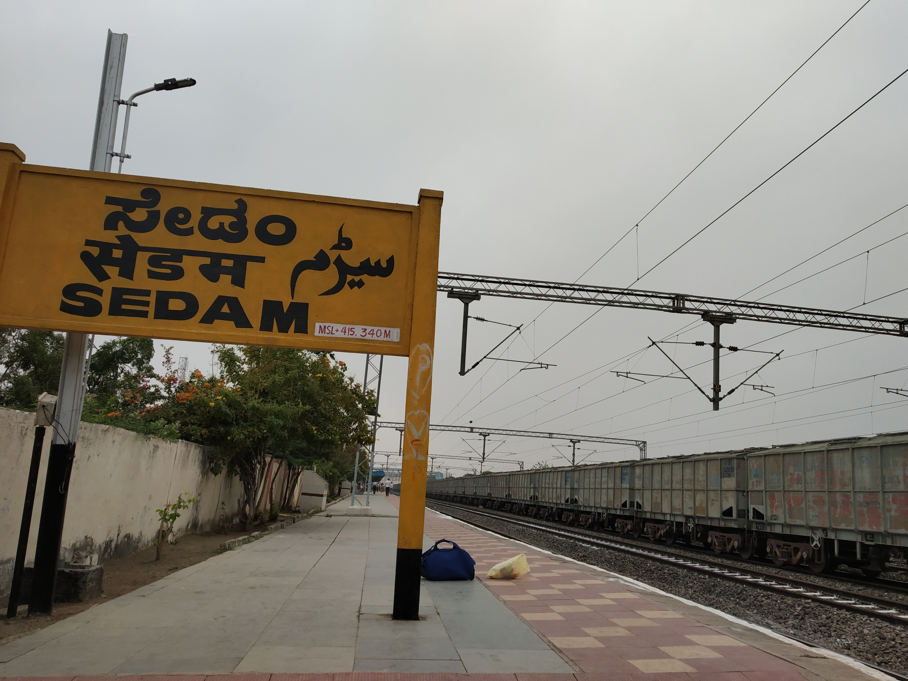

My village name is Sedam Taluk. It is located in Sedam District of Kalaburagi district in the state of Karnataka, India.
Sedam Taluk is situated in the northeastern part of Karnataka. It is well connected by road and railway.
The people of Sedam Taluk are friendly and helpful. Kannada is the main language spoken here. Festivals are celebrated with joy and unity.
Agriculture is the main occupation of the people. Crops like jowar, pulses, and sugarcane are grown.
Sedam Taluk has schools and colleges that provide education to students from nearby villages.
Sedam Taluk is a peaceful and developing place. I am proud of my village.
Created by: krishnaveni